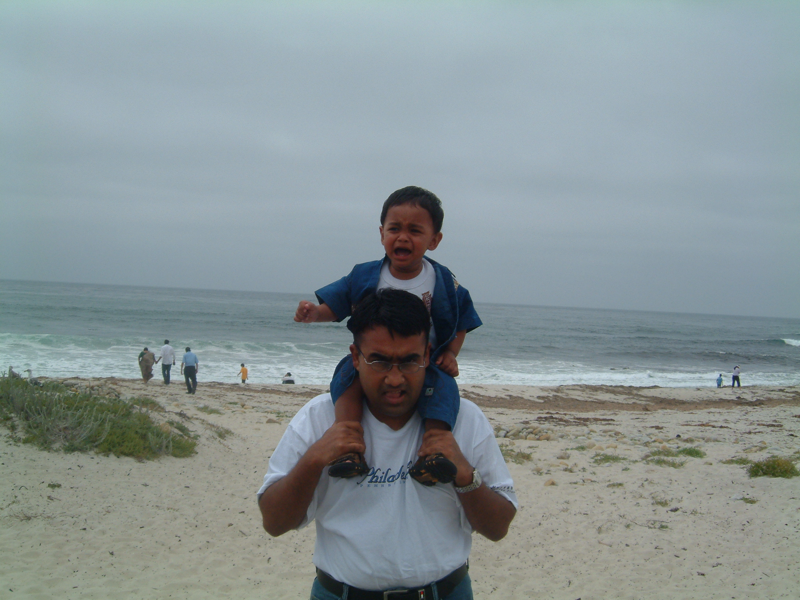
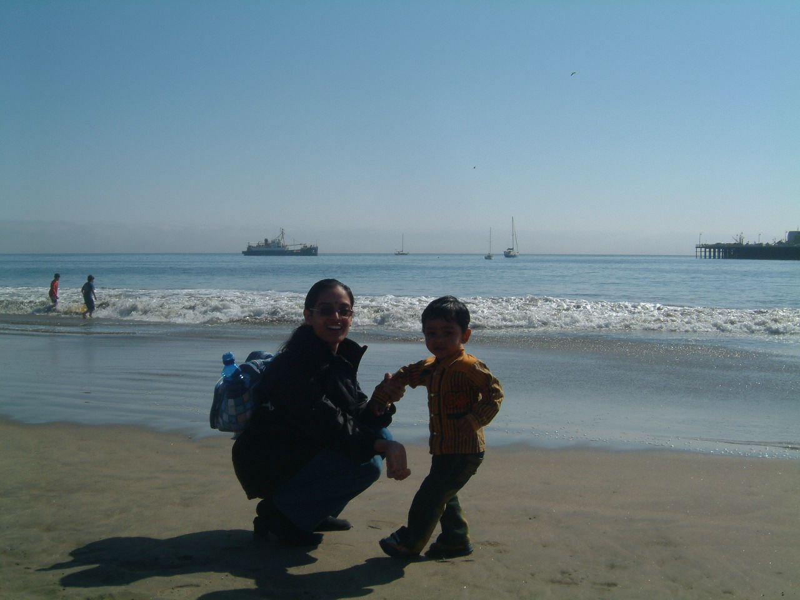
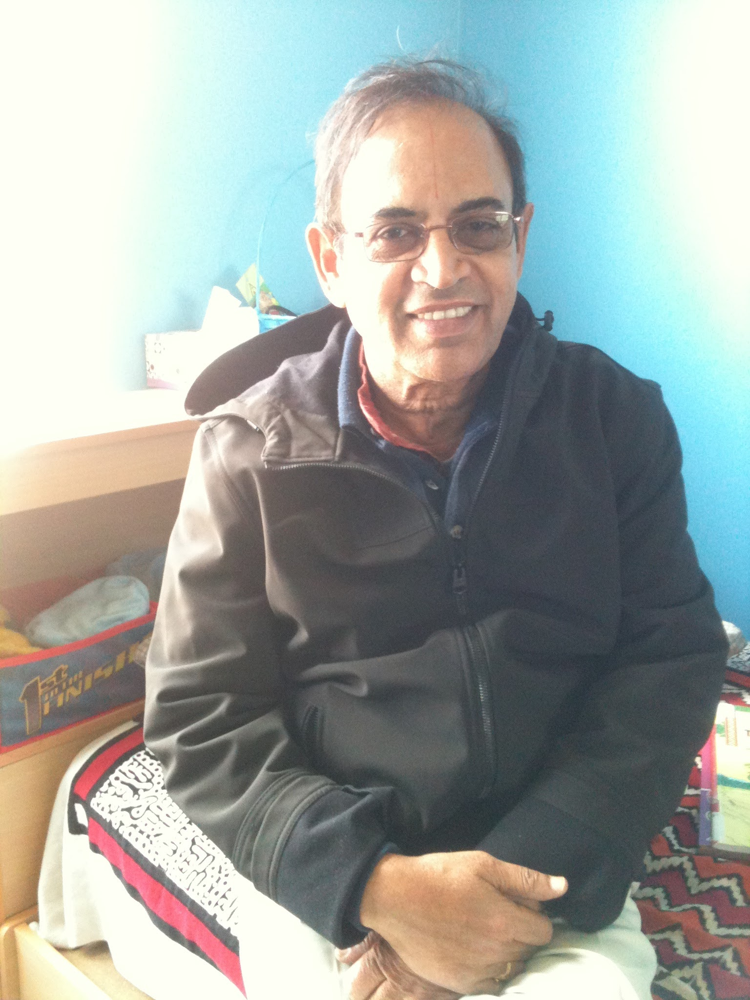
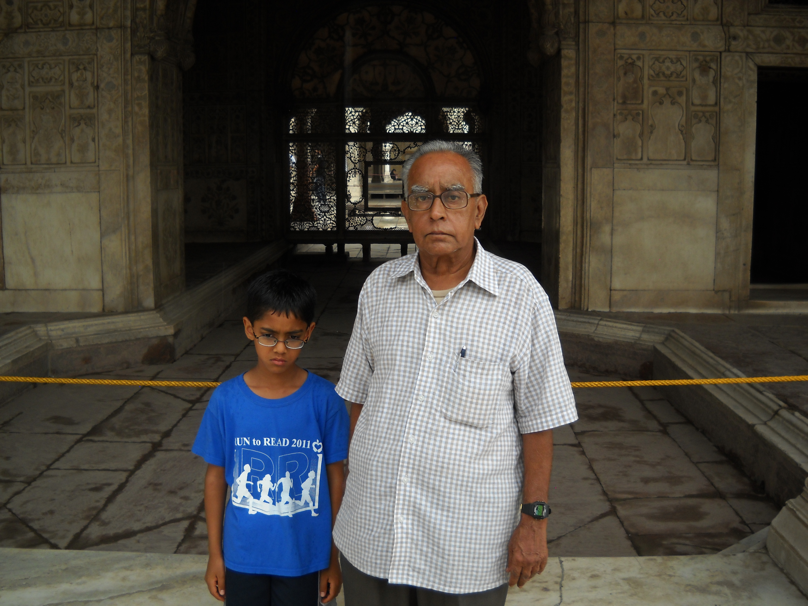
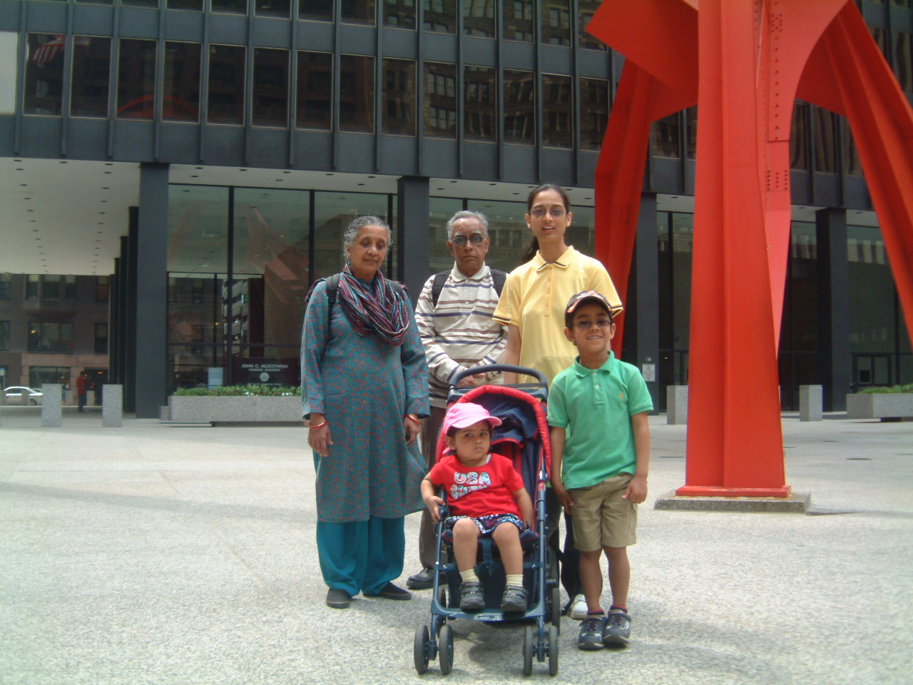

| Name | Relation | Age | Picture | Why they are so Awesome |
|---|---|---|---|---|
| Santhana Shyam (Appa) | Father | 43 |  | My father taught me almost everything I know - from math equations to life skills - and I owe my both athletic and academic successes today to him. He was (and still is) always there for me during my big moments: my birth, my first day of school, my first soccer goal, my graduation, and my first day of high school. He is my biggest role model and inspiration, and for that, Appa, you are the best! |
| Aarthissri Rangashyam (Amma) | Mother | 39 |  | My mother is one of the sweetest people you will ever meet. She sacrifies a lot for our family, working late almost every night. She is very kind, and although she is stern at times, she is a great influence on me and is a real role model. |
| Ananya Krishnan | Sister | 11 |  |
Ananya is an ideal sister. She is smart, nice, and although we get into our fair share of fights, she steps in for me any time I am in a sticky situation and need some help. She is a great girl, and is everything I could have wanted in a sister. |
| Santhanam Thatha | Maternal grandfather | 69 |  | Santhanam Thatha (thatha means "grandfather" in my language, Tamil) is very doting on me. He always brings us gifts when he comes to visit us from India, and is the nice grandparent that everyone wishes that they could have. Thatha, you're great! |
| Geetha Patti | Maternal grandmother | 62 |  |
What I like about Geetha Patti (as you may have guessed, patti means "grandmother" in Tamil) is how accessible she is. When I was into Greek mythology in third grade, she memorized all of the Greek gods and goddesses (which is not an easy feat) so that she could have conversations with me about them. She always supports me, and is a great friend as well as a grandmother. |
| Santhana Thatha | Paternal grandfather | 80 |  | Santhana Thatha may not seem like a fun guy when you first meet him, but he is a really warm person with a great sense of humor. When I was younger, I did not understand some of his jokes, but now I get them and he is absoultely hilarious! Go thatha!!! |
| Mythili Patti | Paternal grandmother | 70 |  (On the far left) |
Last, but certainly not least, my paternal grandmother Mythili Patti is an excellent role model as well. She babysat me when I was little, when both of my parents had to go to work. In fact, one of my strongest childhood memories is of her cooking in the kitchen and quizzing me on my times tables. She has taught me a lot, and always boosts my confidence when I'm feeling a little low - and for that, I will be eternally grateful. |